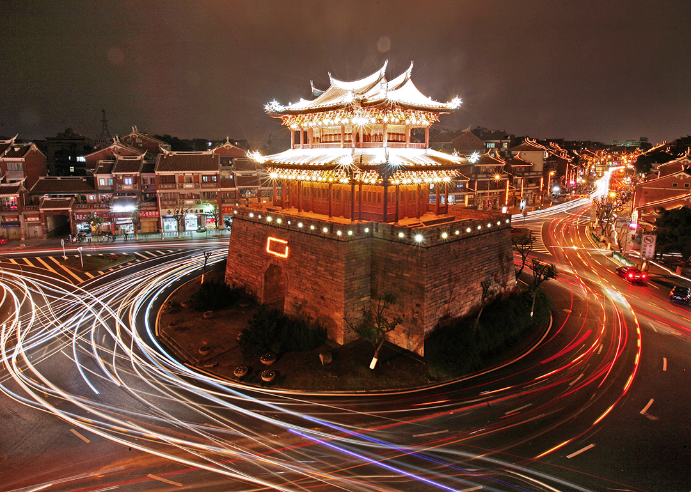

We Have Access to Mainstream Market Trending Commodities
Explore our diverse range of commodities and products, including: Carbon Credits, EV, Energy, Metals, Agriculture, Chemicals, Defense, Office Supplies, Pharmaceuticals, Softs, Water, Construction, Seafood, Delicacy Foods, Meats & Livestock, Alcoholic Beverage, Skincare & Personal Care, Oilfield Equipment, Machinery, Aviation. These commodities and products are sourced from eligible and vetted suppliers targeting specific markets across the globe.
Market Trending Commodities and Products
| Commodity/Product | Industry | Origin | Target Market |
|---|---|---|---|
| Mineral Fertilizers | Agriculture | Kazakhstan | Global |
| Urea N-46 | Agriculture | Turkmenistan | Global |
| Ammonia Nitrite | Agriculture | Kazakhstan | CIS/GCC |
| Ammonia Sulfate | Agriculture | Kazakhstan | CIS/GCC |
| Lubricants | Various | Kazakhstan | Europe/Africa |
| Diesel Generators | Various | Kazakhstan | GCC/Africa |
| EV Charging Infrastructure | Various | Kazakhstan | Europe/GCC/Africa |
Notes
- Commodity reflects the name of the heavy commodity.
- Product reflects an actual physical or liquid product.
- Industry is where the particular commodity or product is being used.
- Origin is the country where the commodity or product is made.
These commodities and products are supplied by eligible and vetted suppliers that have a target market for specific countries and regions.
Contact Us
Email: emporiumoftheworld@proton.me
EuroExim Email: info@euroeximbank.com
Phone: 1114467364
LinkedIn: Heidi Peterson
Trade Finance Services
We offer comprehensive Trade Finance Services through EuroExim Bank, a global financial institution with a head office in St. Lucia and a representative office in London. Our services ensure smooth international transactions and secure financial solutions.